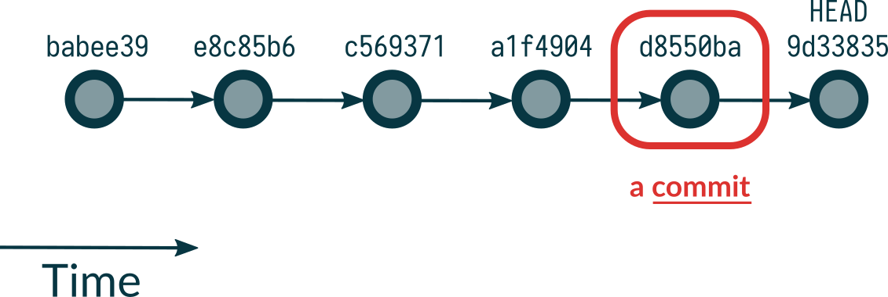
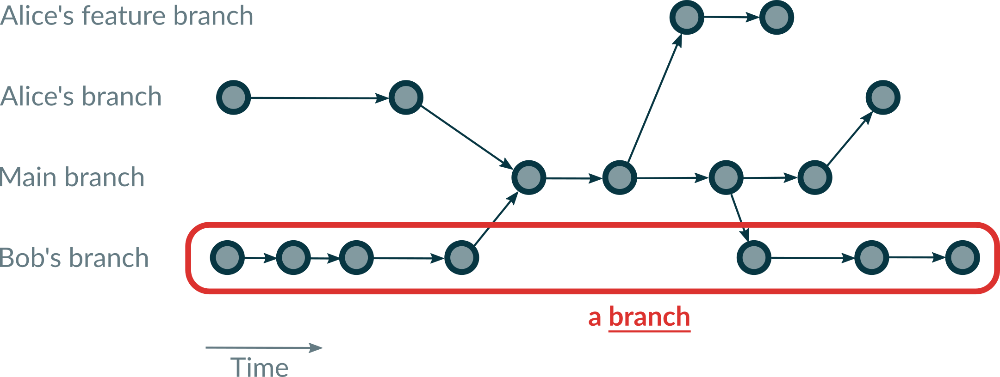
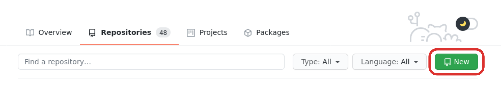
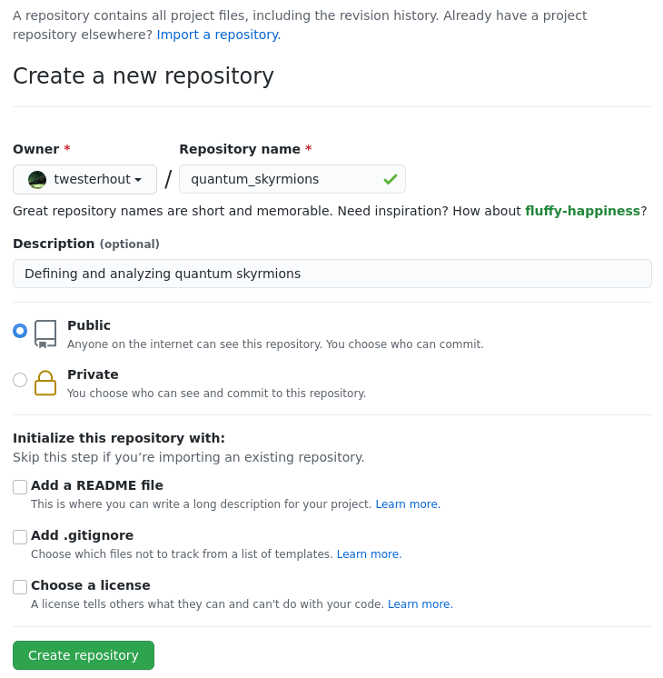
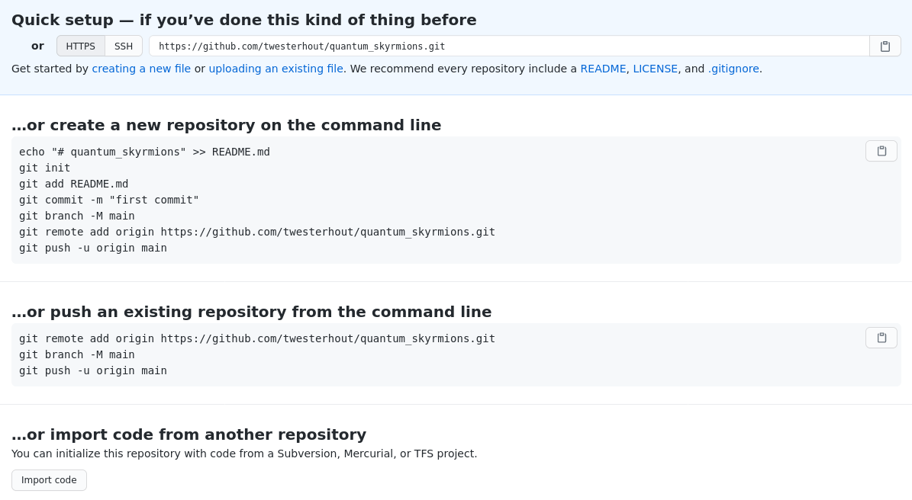

Scientific Programming Best Practices
Tom Westerhout
2 February 2021
Contents
- Reproducibility;
→ keep track of your files
→ Version Control Systems (VCS) - Correctness;
- Performance — some other time.
What is version control?
Version control is a system that records changes to a file or set of files over time so that you can recall specific versions later.
Source: Pro Git Book
Example:
$ ls
main_fixed_eq5.tex main_prb.tex main_prl_final.tex
main_prl.tex main.tex main_v2.tex
$ # Thinking...
$ cp main_prb.tex main_prb_final.tex
Local version control systems
- How to collaborate?
- Files are all in one place!

Centralized version control systems
- How to collaborate?
- Files are all in one place!

Distributed version control systems
- How to collaborate?
- Files are all in one place!
Git

Git
Of the professional developers who responded to the survey, almost 82% use GitHub as a collaborative tool
- Concepts
- Example & some commands
Repository (or Git project)
repository = files + history
Files:
quantum_skyrmions/
├── Analysis
│ ├── 19_site_cluster.yml
│ ├── 7_site_cluster.yml
│ ├── slurm_main.sh
│ └── SpinED-x86_64.AppImage
├── Drafts
│ ├── paper.tex
│ └── references.bib
├── Figures
│ ├── ground_state_energy.pdf
│ └── topological_invariant.pdf
├── Proofs
├── Published
├── Raw data
│ ├── exact_diagonalization_result_19.h5
│ └── exact_diagonalization_result_7.h5
└── Submitted
i.e. your whole project folder
History
The file history appears as snapshots in time called commits
Source: Git Handbook
- Commits are described by hashes (SHA),
e.g.9d33835a8e744c5f9cc950f672885dd706c0852f - Hash function is any function that can be used to map data of arbitrary size to fixed-size values (Source: Wikipedia)
- Commits are assembled into linked lists: 
History
Example: creating a repository
- Choose a server: Github, GitLab.com, Science GitLab
- Create a repository using web interface (Github as an example):
  
Example: following Github's instructions
$ cd quantum_skyrmions/
$ git init
Initialized empty Git repository in .../quantum_skyrmions/.git/
$ git remote add origin https://github.com/twesterhout/quantum_skyrmions.git
Example: making changes to files
$ vi "SimpleTests.wl"
Guideline: Create a repository for every project you work on
- Private/Public
- Github/GitLab
- ...
What to do with data?
Recap
Version Control Systems
- Copy/paste → Local → Centralized → Distributed → Git
- Repository, commits, branches
- Remotes?
add,commit,pushstatus,diff,logclone,pull- Each project has a corresponding repository
- Git LFS for important data files
Reproducibility
- Sharing your environment
- Making your code portable
Sharing your environment: virtualization
Virtualization refers to the act of creating a virtual (rather than actual) version of something, including virtual computer hardware platforms, storage devices, and computer network resources.
Source: Wikipedia
- Virtual machines;
- Hardware drivers;
- ...
Virtualization: levels
- Virtual machines (e.g. VirtualBox,
Windows Subsystem for Linux):
→ abstracts everything including the kernel
→ performance overhead - Containers (e.g. Docker,
Singularity):
→ reuses the kernel, but abstracts everything else
→ no performance overhead - Virtual environments